Welcome!
We are here to learn!
And also.. some "rules"
- I am here for you!
- Every question is important
- Help each other
- Have fun
Now it's all about you!
- Tell us who you are.
- What do you hope to get out of this class?
- Unlimited amount of money - where would you travel to?
What we'll be covering in this class
We'll be jumping into HTML/CSS and JavaScript fundamentals.
At the end you should be able to create your own awseome web application.
But first..
Story time:
What is the Web?
Jen's story
Jen would like to get some information about labradoodles.
She opens up her browser on her laptop
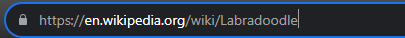
Types https://en.wikipedia.org/wiki/Labradoodle in her browser
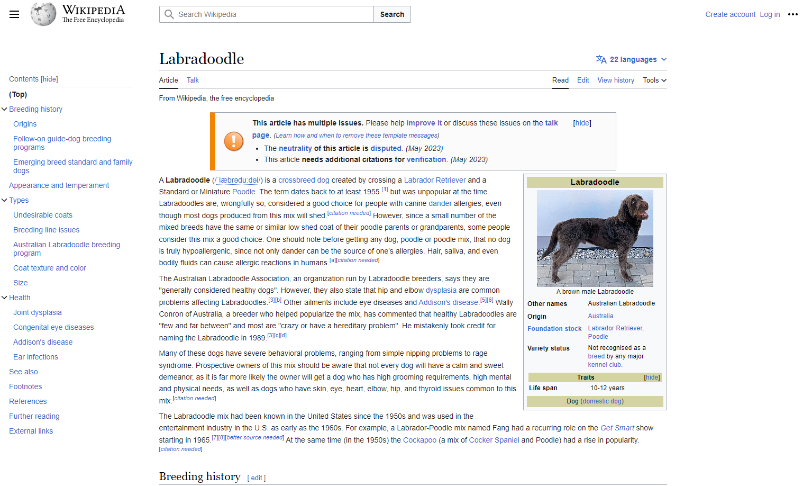
And is now able to find out all about labradoodles!
What is this magic?
- How does Jen's computer fetch the content of the webpage?
- What makes up the content of the webpage?
- What types of developers work on the webpage?
How does Jen's computer fetch the content of the webpage?
The content is fetched over the web
What is the web?
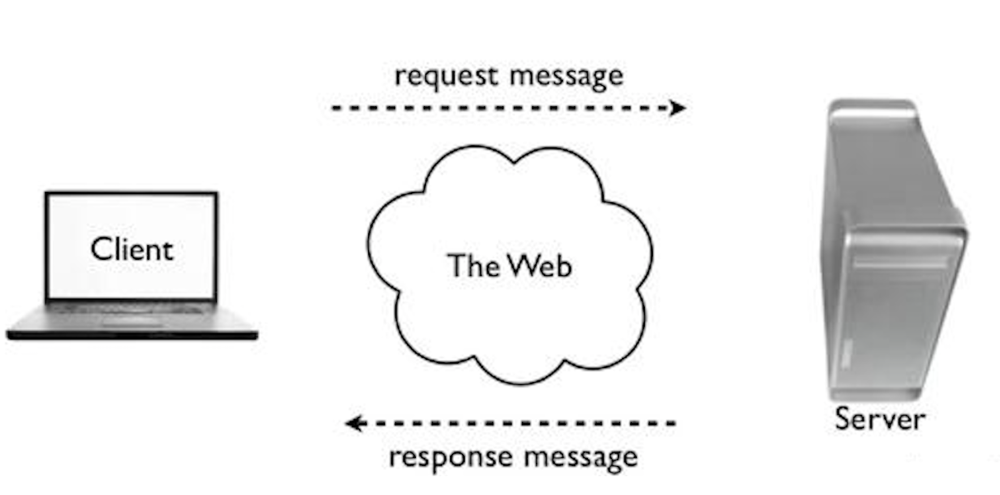
- Computers communicating with each other with REQUESTS and RESPONSES
- Computers can be CLIENTS or SERVERS
The client
- Jen's computer is the CLIENT
- It sends a REQUEST over the web for the content of the webpage.
The request
contains instructions detailing
- The domain: The web address of the server to send the request to
www.wikipedia.org
- The action: What it wants the server to do
GET
- The path: What it wants from the server
wiki/labradoodle
The request
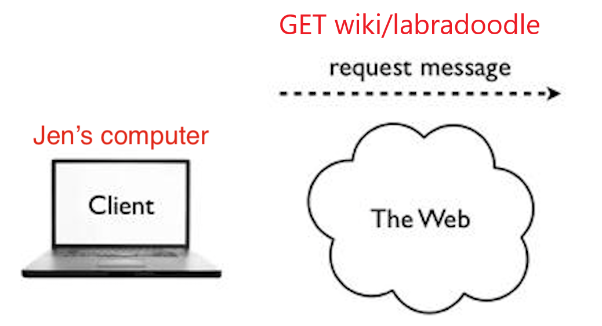
"Tell www.wikipedia.org to GET the information at the path wiki/labradoodles"
The server
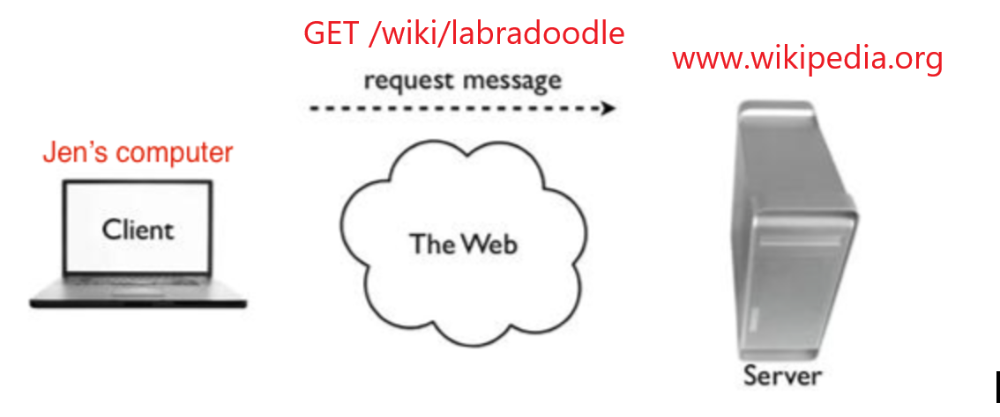
- The computer at wikipedia.org is the SERVER
- It receives the REQUEST for the content of the webpage.
The server
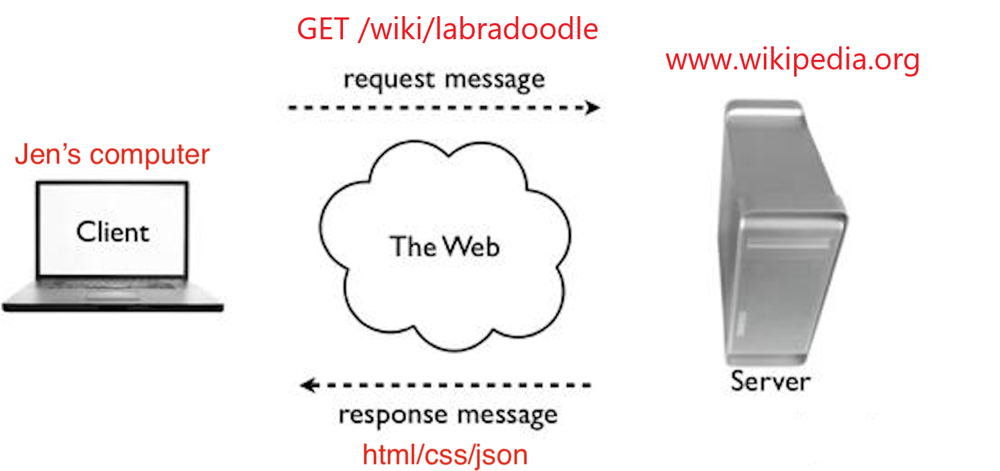
- The SERVER sends the content back to Jen's computer in a RESPONSE
The response
contains the status of the request
"OK" (successful request!)
and the content of the webpage
- HTML (text and images)
- CSS (styling)
- Javascript (functionality)
- JSON (data)
More on these later...
Back to the client
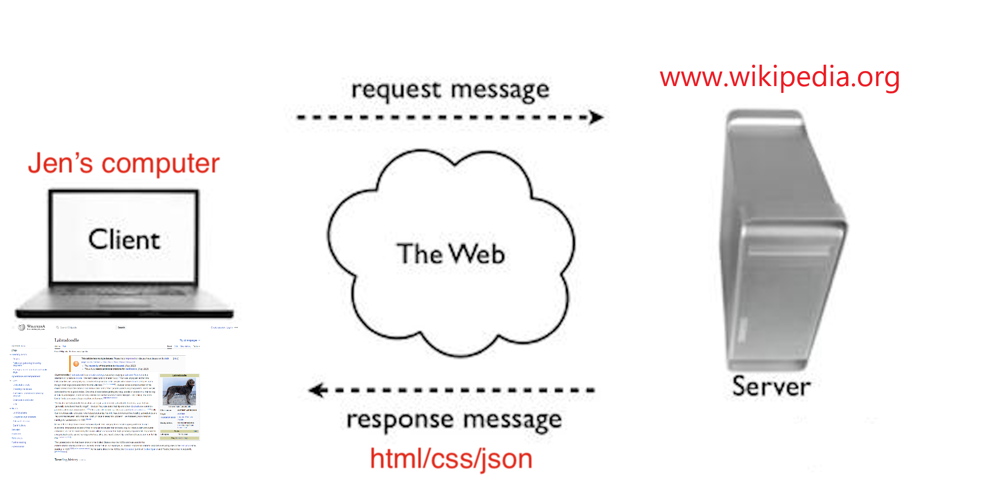
Jen's computer receives the response and displays the content in her browser.
What makes up the content of the webpage?
- HTML (text and images)
- CSS (styling)
- Javascript (functionality)
- JSON (data)
HTML
- Use to add content to your webpage (text, images) using HTML elements
- HTML elements are represented by tags and have content inside them.
This is the content of a header
This is the content of a header
CSS
- Use to add styling to your webpage (color, layout)
- Is separate from HTML and can add the same styling to multiple webpages
Exercise
- Go to Labradoodle Wiki
- Inspect the side info panel
- Change the header background color to green
- Align the header to the rignt
Javascript
- Use to add functionality to your webpage
- Makes webpages dynamic and interactive
Exercise
- Go to Labradoodle Wiki
- Try to change the language of the page. What happens?
It works! Javascript gives it functionality
- Where does all of the new data come from?
To store and retrieve data we use JSON
JSON
A popular way to format data
[
{"id":0,"language":"English","breed":"Labradoodle"},
{"id":1,"language":"Chinese","breed":"拉布度多狗"},
{"id":2,"language":"Japanese","breed":"ラブラドゥードル"},
{"id":3,"language":"Bulgarian","breed":"Лабрадудъл"}
]
JSON
- The CLIENT can send new data as JSON in a REQUEST to the SERVER to be stored
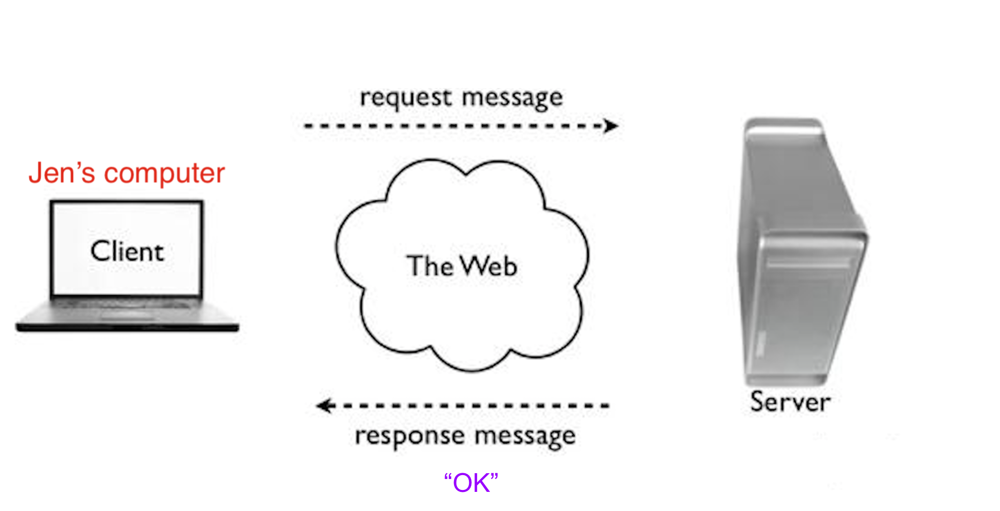
"Tell the SERVER at wikipedia.org to store this new information"
JSON
- The SERVER can lookup data and send it back to the CLIENT as JSON in a RESPONSE
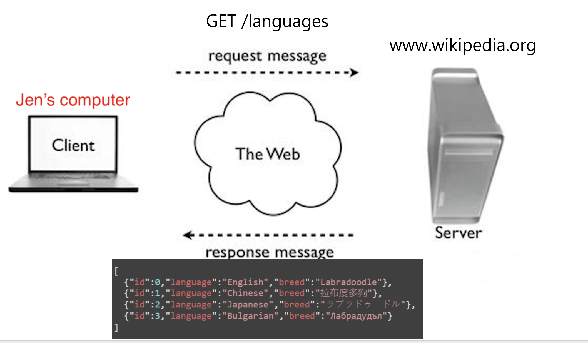
"Here is the information that I have stored"
The Database
- The SERVER stores and looks up data in a DATABASE
- Code is written in a server-side programming language to do this
What types of developers work on these webpages?
Front-end developers
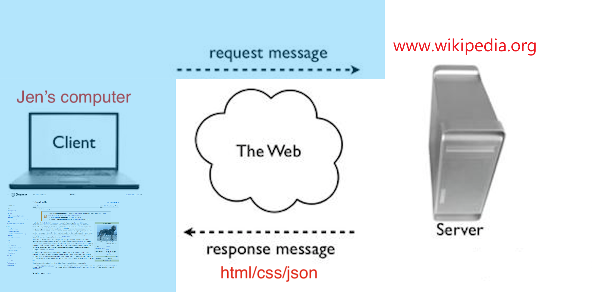
Write client-side code to...
- create and design webpages using HTML and CSS
- give websites functionality using Javascript
- send requests to servers and handle their responses
Back-end developers
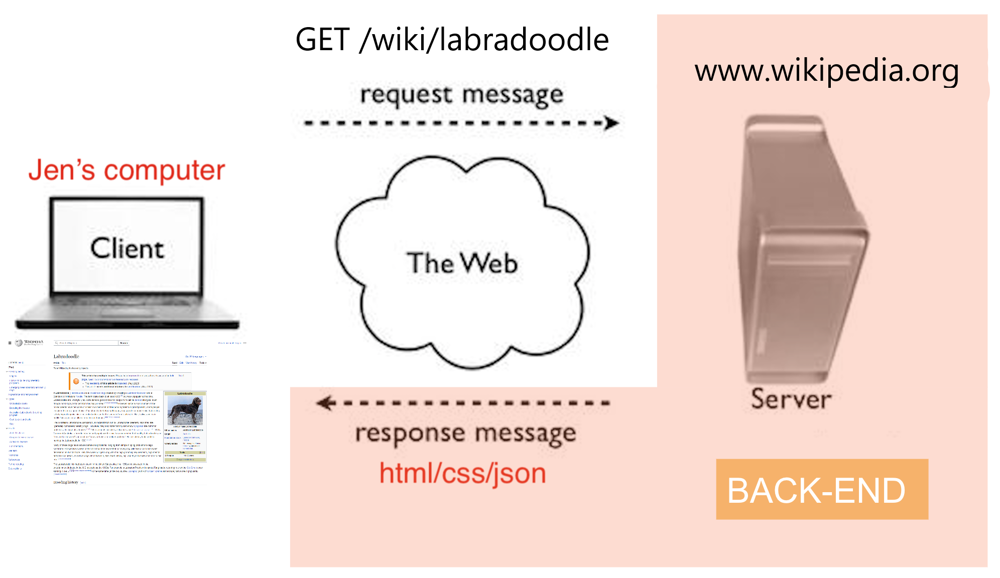
Write server-side code to...
- receive requests from clients and send back responses
- connect to a database to store and look up data sent as JSON
- handle other logic such as transforming data or performing calculations
Full-stack developers
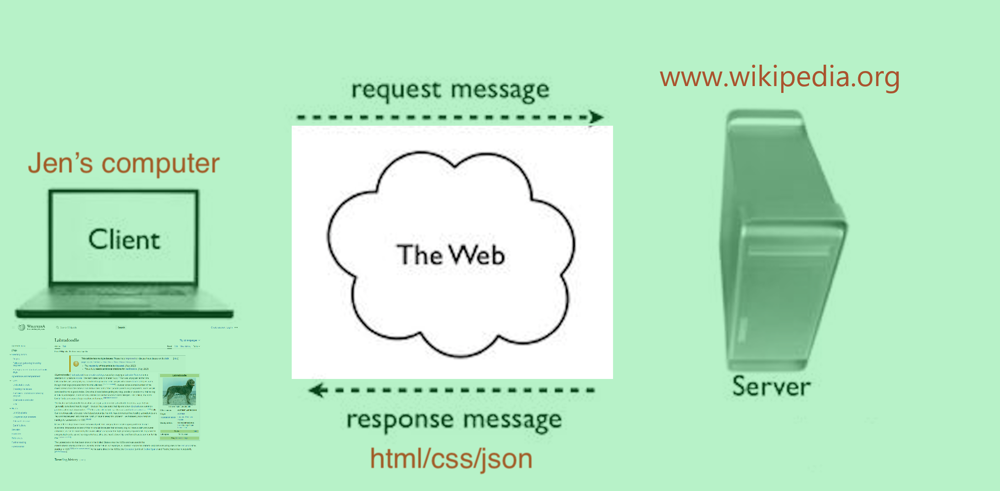
Write server-side
and
client-side code!
Day in the life
Planning, thinking, drawing, debugging